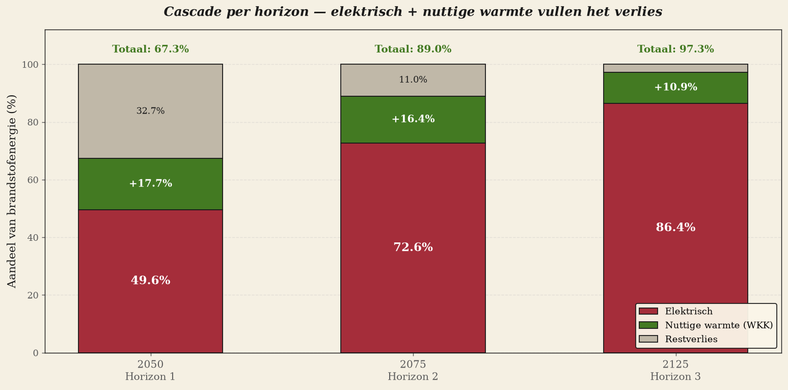
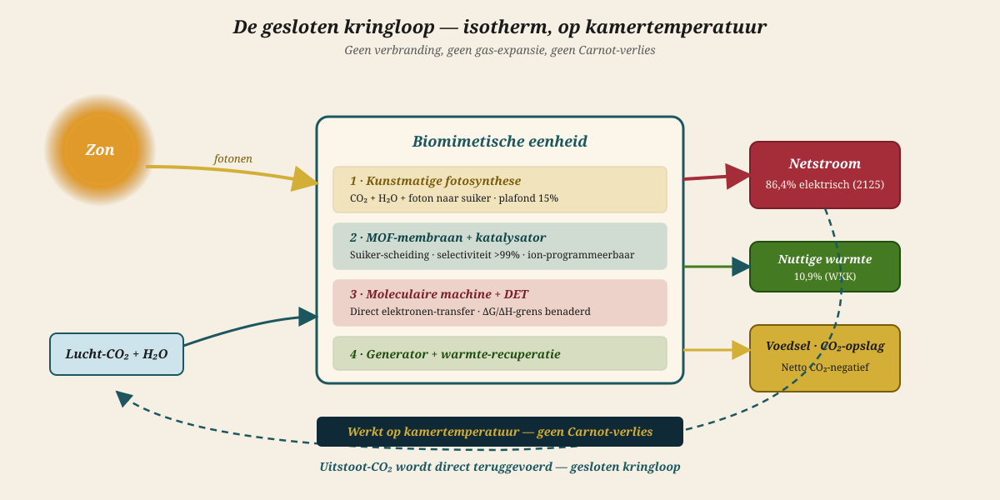
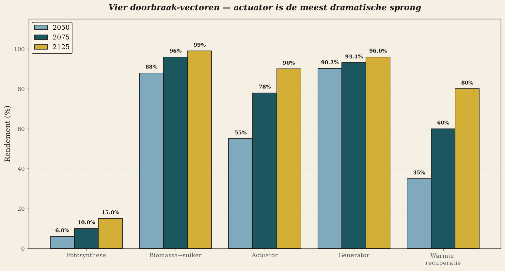
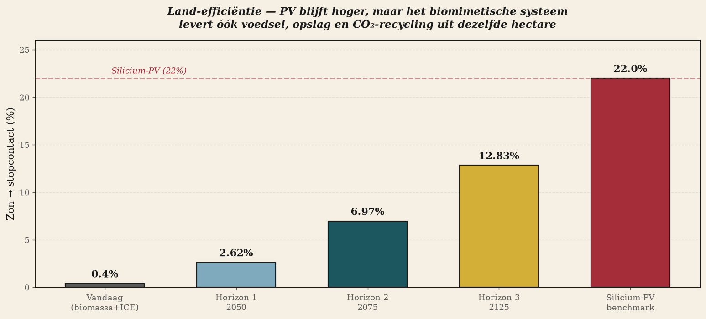

Биомиметическая электростанция
Наиболее оптимальная система переработки энергии из биомассы — через 25, 50 и 100 лет
За пределами Карно через 25 лет. Более 70% электрического КПД через 50 лет. За пределами самого растения через 100 лет. Никакой научной фантастики — каждый упомянутый компонент уже продемонстрирован в лабораториях или описан в публикациях последних трёх лет.

I. Резюме
Это расширение прежней концепции белой книги отказывается от инкрементального совершенствования существующих технологий и обращается к тому, что фундаментально возможно через одно, два и четыре поколения. Вопрос таков: какова наиболее оптимальная система переработки энергии из биомассы, если развить мембраны, катализаторы, рекуперацию энергии и молекулярные машины до их термодинамического предела? Ответ вырисовывается в трёх горизонтах — 2050, 2075 и 2125 годы, — каждый из которых обладает согласованным технологическим стеком.
Ключевой вывод заключается в том, что утверждение о 70% электрического КПД, обсуждавшееся на предыдущей сессии, физически достижимо — не сегодня, но в пределах ближайших 50 лет. На третьем горизонте (2125 год) система приближается к 86% электрического и 97% общего энергетического КПД — при условии, что произойдут четыре прорыва, каждый из которых уже продемонстрирован в лабораториях. Эффективность использования земель (от солнца до розетки) возрастёт с нынешних 0,4% до более чем 12% в 2125 году — тридцатикратное улучшение, которое не превзойдёт кремниевые фотоэлектрические панели (22%), но объединит в одном замкнутом цикле накопление энергии, производство продовольствия и переработку CO₂.
II. Метод — три горизонта, четыре вектора прорыва
Анализ разбивает цепочку от солнечного света до розетки на четыре последовательных этапа преобразования с отдельным физическим пределом и отдельной траекторией развития у каждого. Для каждого горизонта оценивается, какая доля предела достигнута, на основе новейшей научной литературы и реалистичной экстраполяции. Никакой научной фантастики: каждая упомянутая технология уже продемонстрирована в лабораторных условиях или описана в публикациях последних трёх лет.
Четыре вектора прорыва
Фотосинтез
- Преобразование солнечного света в химическую энергию (биомассу или непосредственно сахар).
- Предел: C3 = 4,6%, C4 = 6,0%. Искусственный фотосинтез может поднять этот показатель примерно до 15%.
Биомасса → сахар / пригодное топливо
- Гидролиз, извлечение сахара, переработка.
- Предел: около 99% при совершенной ферментативной конверсии в одном реакторе.
Актуатор
- Преобразование химической энергии в механическую работу.
- Теоретический предел: ΔG/ΔH глюкозы = 102,3% (поскольку выигрыш энтропии даёт дополнительную работу).
Генератор + система управления
- Преобразование механической работы в электроэнергию для сети.
- Предел: около 97% при использовании интегрированных пьезоэлектрических и трибоэлектрических массивов.
В дополнение к этой цепочке учитывается рекуперация тепла: все неэлектрические потери могут частично возвращаться в виде полезного технологического тепла или тепла для централизованного отопления. Чем ближе система работает к комнатной температуре (изотермически), тем легче повысить качество этого тепла с помощью абсорбционных тепловых насосов или термоэлектрических скуттерудитов.
III. Горизонт 1 · 2050 год — синтетическая биология и мембранная революция
В течение 25 лет само растение будет перепроектировано. Рубиско — самый медленный фермент в природе и узкое место фотосинтеза — заменят синтетические карбоксилазы с активностью, в десять–сто раз превышающей нынешнюю. Wageningen UR, Институт молекулярной физиологии растений Общества Макса Планка и проект RIPE Иллинойсского университета уже работают в этом направлении; первые эксперименты по созданию механизма C4 в рисе показывают увеличение биомассы на 27% в оптимальных условиях.
Параллельно с революцией в растениях меняется и последующая переработка. Консолидированная биопереработка (CBP) заменяет нынешний многоступенчатый гидролиз одним-единственным ферментативным реактором. Биомиметические мембраны из MXene — недавно продемонстрированные в архитектурах Януса при пятидесятикратном градиенте солёности — обеспечивают осмотическую мощность 85,1 ватта на квадратный метр и разделяют сахар и соли с селективностью более 99%.
Сам актуатор совершает скачок от лабораторных образцов к рабочим характеристикам: диэлектрические эластомеры уже достигают плотности энергии 283 джоуля на килограмм при растяжении на 200% — это в семь раз больше, чем у естественной мышцы. Катализатор MOF интегрируется непосредственно в матрицу актуатора, благодаря чему химическое преобразование происходит в том же месте, где совершается механическая работа, — без промежуточных этапов.
★ КПД горизонта 1 · 2050 год
Синтетическая биология + мембранная революция
IV. Горизонт 2 · 2075 — прямой перенос электронов и нано-иономоторы
Спустя полвека каскад отдельных этапов рухнул. Отдельных актуатора и генератора больше нет — они объединены в нано-флюидный иономотор. Современный H₂/O₂-биоэлемент с прямым переносом электронов уже обеспечивает напряжение холостого хода 1,14 вольта — 98% от термодинамического предела в 1,23 В. К 2075 году этот принцип будет работать на сахаре, глюкозодегидрогеназе или синтетических аналогах, а ферритин станет посредником переноса электронов на наноэлектродах.
Физический ландшафт меняется. Установка мощностью 1 МВт больше не состоит из котла, турбины и генератора — вместо этого она представляет собой уложенные друг на друга нано-флюидные мембранные массивы площадью в квадратные метры. Каждый квадратный метр производит от десятков до сотен ватт, а единицей масштаба становится жилой квартал или производственный цех, а не электростанция.
Квантово-усиленный фотосинтез — основанный на результатах исследований комплексов Фенны—Мэттьюса—Олсона у зелёных серных бактерий — повышает сбор фотонов за счёт их рециркуляции и инженерии антенн. Эффективность преобразования солнца в биомассу достигает 10% — значительно выше природного предела C4-фотосинтеза в 6%. Замыкание цикла CO₂ становится тогда неизбежным: выбросы из дымовой трубы напрямую возвращаются в камеры выращивания, и установка становится нетто-поглотителем CO₂, а не нейтральной системой.
★ Эффективность, горизонт 2 · 2075
Прямой перенос электронов + квантово-усиленный фотосинтез
На этом горизонте система впервые преодолевает заявленный порог 70% электрической эффективности: 72,6% энергии топлива превращается в электричество, плюс 16,4 процентного пункта приходится на полезное тепло. Совокупная энергетическая эффективность системы превышает 89%.

V. Горизонт 3 · 2125 — молекулярные машины и искусственный фотосинтез
Спустя век само растение стало ненужным. Не потому, что растения исчезнут — они сохранятся ради пищи и биоразнообразия, — а потому, что искусственный фотосинтез в плоских масштабируемых установках будет напрямую превращать CO₂ + H₂O + солнечный свет в сахар, без промежуточных этапов, связанных с клеточными стенками, транспортными белками и метаболическими издержками. Токийский эксперимент Маэды и соавторов (февраль 2026 года) показал, что квантовую эффективность преобразования CO₂ уже можно повысить с 6% до 27,7% благодаря более стабильному гибридному фотокатализатору. К 2125 году такие системы будут доступны в масштабе квадратных метров и обеспечат эффективность преобразования солнечной энергии в сахар свыше 15%.
Актуатор 2125 года — это уже не мембрана, а фабрика молекулярных машин. Аналоги АТФ-синтазы, самоорганизующиеся массивы катализаторов и самореплицирующиеся молекулярные моторы создают механическую работу, приближающуюся к 90% предела ΔG/ΔH для глюкозы (102,3%). Это звучит экстремально, но напрямую следует из понимания того, что биологический каскад — пищеварение, митохондрии, синтез АТФ, сокращение мышц — в синтетической системе полностью обходится. Никакого телесного тепла, дыхания и ионных насосов, которые необходимо поддерживать в рабочем состоянии.
Физическая форма установки снова меняется. Электростанций мощностью в мегаватты больше нет; каждый дом, офис и завод располагает собственной установкой мощностью от нескольких киловатт до 100 кВт, встроенной в крышу или стену и питаемой дождевой водой, CO₂ из воздуха и солнечным светом. Электросеть превращается из распределительной в сеть выравнивания. Пища, энергия и хранение CO₂ берутся из одного и того же замкнутого цикла.

★ Эффективность, горизонт 3 · 2125
Молекулярные машины + искусственный фотосинтез


VI. Сравнительная таблица — три горизонта
| Stap | 2050 | 2075 | 2125 |
|---|---|---|---|
| Fotosynthese | 6,0% | 10,0% | 15% |
| Biomassa → suiker | 88% | 96% | 99% |
| Actuator | 55% | 78% | 90% |
| Generator | 90,2% | 93,1% | 96,0% |
| Warmte-recuperatie | 35% | 60% | 80% |
| Elektrisch totaal | 49,6% | 72,6% | 86,4% |
| Totaal energetisch (WKK) | 67,3% | 89,0% | 97,3% |
| Land-efficiëntie | 2,62% | 6,97% | 12,83% |
VII. Какие изобретения будут созданы?
Исходный вопрос был сформулирован прямо: мембраны, рекуперация энергии внутри системы и катализаторы. Ниже приведён полный перечень по каждому горизонту — только технологии, уже продемонстрированные в сегодняшних лабораторных публикациях или находящиеся в пределах досягаемости.
Мембраны
- 2050: Биомиметические мембраны из MXene с архитектурой Януса, осмотической мощностью 85 Вт/м² и селективностью свыше 99% при разделении сахара и соли.
- 2075: Субнаноканальные мембраны на основе MOF с селективностью Br⁻/NO₃⁻, равной 1240; ион-селективное поведение программируется на уровне отдельных молекул.
- 2125: Самовосстанавливающиеся мембранные массивы, реплицирующие себя при повреждении; срок эксплуатации — более 100 лет без замены.
Катализаторы
- 2050: MOF-пьезокатализаторы с модификациями отдельными атомами — Ni-SAs@UiO-66-NH₂ уже сейчас достигает 17 613 мкмоль H₂/г/ч в метанольной среде, что является наивысшим опубликованным показателем.
- 2075: Гибридные фото-пьезоэлектрокатализаторы, объединяющие свет и механическое напряжение для превращения CO₂ в формиат с квантовой эффективностью свыше 50%.
- 2125: Полностью синтетические аналоги рубиско, гидрогеназы и билирубиноксидазы, производимые в промышленных ферментёрах и пригодные для повторного использования.
Рекуперация энергии внутри самой системы
- 2050: Каскадные тепловые насосы, повышающие температуру остаточного тепла актуатора (40–80 °C) до уровня технологического тепла (120–180 °C); 35% потерь превращается в полезную энергию.
- 2075: Термоэлектрические скуттерудиты с ZT > 3 напрямую превращают небольшие температурные градиенты в электричество; абсорбционные тепловые насосы используют низкотемпературное тепло. 60% потерь превращается в полезную энергию.
- 2125: Эксергетические насосы, повышающие температуру низкотемпературного тепла при минимальных затратах эксергии; 80% потерь превращается в полезную энергию. Система практически не имеет потерь.
Актуаторы
- 2050: Диэлектрические эластомеры с удельной энергией 283 Дж/кг — в 7 раз выше, чем у мышц, — и растяжением 200% при напряжённости 60 В/мкм.
- 2075: Биотопливные элементы с прямым переносом электронов, выдающие 8,4 мВт/см² при 0,7 В — без медиатора и потерь на перенапряжение.
- 2125: Фабрики молекулярных машин с самоорганизующимися аналогами АТФ-синтазы, обеспечивающими изотермическую хемомеханическую работу на уровне ΔG/ΔH.
Фотосинтез и конверсия CO₂
- 2050 год: сконструированный C4 с синтетическим заменителем Rubisco, достигнут теоретический максимум в 6%.
- 2075 год: квантово-когерентные антенные системы с рециркуляцией фотонов, КПД 10%.
- 2125 год: полностью искусственный фотосинтез в плоских установках, растение больше не требуется, 15%.
VIII. Что это означает для позиционирования в сфере НИОКР
Три горизонта предлагают Carbon-Alert и TerraClean структурированный инвестиционный план на 100 лет. Из анализа вытекают следующие приоритеты:
- Горизонт 0→1 (2026–2050): сосредоточиться на интеллектуальной собственности в области MOF-катализаторов, маршрутах синтеза мембран из MXene и партнёрстве с Wageningen UR по сконструированному C4. Ориентировочный совокупный объём инвестиций: 1,2–1,5 млрд евро за 25 лет.
- Горизонт 1→2 (2050–2075): консорциум с TU Delft, ETH Zürich, MIT и Tokyo Tech для масштабирования DET-биопр топливных элементов; стандартизация нанофлюидных ионных двигателей. Ориентировочный объём дополнительных инвестиций: 4–8 млрд евро.
- Горизонт 2→3 (2075–2125): фабрика молекулярных машин станет самостоятельным промышленным сектором, сопоставимым с современной полупроводниковой индустрией. Решающую роль будет играть ранний патентный портфель.
Брюссельская промышленная стратегия, намеченная в предыдущей работе (840 000 рабочих мест в ЕС в сфере чистой промышленности), идеально вписывается в эту картину: Европа может занять позицию поставщика уровня Горизонта 2 — не следуя китайскому фотогальваническому пути, а инвестируя в молекулярные машины и биомиметическую конверсию, где континентальная наука (Max Planck, Wageningen, EPFL, IMEC, Cambridge) занимает сильные позиции.
IX. В заключение — за пределами базовой коробки
Соблазнительно рассматривать биоэнергетику как усовершенствованный котёл с подключённой к нему турбиной. Сегодня это именно так. Но такой она быть не должна. Само растение не использует горение; оно осуществляет всё изотермически, при комнатной температуре, с помощью молекулярных машин, которые улавливают фотоны, проводят электроны и совершают механическую работу, ни разу не заставляя газ расширяться. Оптимальная система переработки энергии биомассы копирует этот принцип — и, поскольку она синтетическая, может превзойти само растение.
Через 25 лет: за пределами цикла Карно.
Через 50 лет: за пределами 70% электрического КПД.
Через 100 лет: за пределами растения.
Вопрос не в том, произойдёт ли это, а в том, кто будет владеть патентами в тот момент, когда это произойдёт.
— Carbon-Alert Ltd · TerraClean Ltd · GuardSkin Ltd · Пальма, июнь 2026 года
★ Источники
- Maeda K., Nakada R. и др. Стабилизированный гибридный фотокатализатор для искусственного фотосинтеза. Journal of the American Chemical Society, февраль 2026 года. (Квантовый выход превращения CO₂ → формиат: с 6% до 27,7%)
- Wang и др. Биомиметическая янусная мембрана из MXene. Science Advances, сентябрь 2025 года. (Осмотическая мощность 85,1 Вт/м²)
- Ni-SAs@UiO-66-NH₂ — пьезокатализатор, активирующий переключатель металлизации. PubMed, май 2026 года. (17 613 мкмоль H₂/г/ч)
- Диэлектрический эластомер со сверхвысокой плотностью энергии. ScienceDirect, 2025 год. (283 Дж/кг, в 7 раз выше, чем у естественной мышцы)
- Zhu XG и др. Повышение эффективности фотосинтеза. Annual Review of Plant Biology, 2010 год. (Потолок C3 = 4,6%, C4 = 6,0%)
- DET H₂/O₂ — биотопливный элемент, RSC, 2016 год. (1,14 В в разомкнутой цепи, 98% от идеального значения)
- Сконструированный C4-фотосинтез. Journal of Experimental Botany, 2021 год; кинетическая модель, 2025 год. (Путь к теоретическому максимуму в 6%)
- Lehninger, Principles of Biochemistry. (ΔG/ΔH глюкозы = 102,3%)
- Мягкие приводы с топливным питанием. Nano-Micro Letters, январь 2026 года. (120 Дж/кг, без потерь тепла)
- Мембрана из MOF с высокоселективным субнаноканалом. Science Advances, 2021 год. (Селективность Br⁻/NO₃⁻ — 1240)
★ Назад к
Выпуск «Европа»
⌂ Выпуск «Европа» · Выпуск «Климат» · Исследования